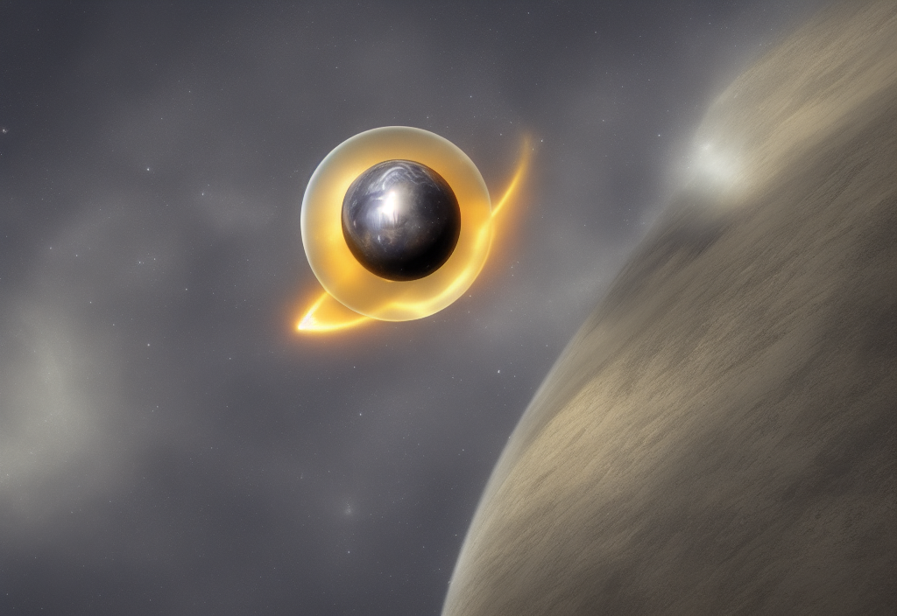

The Heliosphere.
NASA studies the heliosphere to better understand the fundamental physics of the space surrounding us, which provides information regarding space throughout the rest of the universe. Additionally, understanding the heliosphere can help us to understand what makes planets habitable. The field of heliophysics is cross-disciplinary, and NASA missions contribute to our understanding of the heliosphere through direct observation.
The solar wind is a gas of charged particles known as plasma, a state of matter governed by its own set physical laws just as the more common solids, liquids, and gases are. As the solar wind sweeps out into space, it creates a space environment filled with radiation as well as magnetic fields that trail all the way back to the sun. This space environment is augmented by interstellar cosmic rays and occasional concentrated clouds of solar material that burst off the sun, known as coronal mass ejections.
This complex environment surrounds the planets and ultimately has a crucial effect on the formation, evolution, and destiny of planetary systems. For one thing, our heliosphere acts as a giant shield, protecting the planets from galactic cosmic radiation. Earth is additionally shielded by its own magnetic field, the magnetosphere, which protects us not only from solar and cosmic particle radiation but also from erosion of the atmosphere by the solar wind. Planets without a shielding magnetic field, such as Mars and Venus, are exposed to such processes and have evolved differently.
NASA's studies of the heliosphere include research into: how the solar wind behaves near Earth; what causes and sustains magnetic and electric fields around other planets; how does the heliosphere interact with the interstellar medium; what do the boundaries of the heliosphere look like; what is the origin and evolution of the solar wind and the interstellar cosmic rays; and what contributes to the habitability of exoplanets.

The field is, therefore, intensely cross-disciplinary. Heliospheric research often works hand in hand with planetary scientists, astrophysicists, astrobiologists, and space weather researchers.
NASA heliophysics missions contributing to heliospheric research are: the Advanced Composition Explorer; NOAA's Deep Space Climate Observatory, the Interstellar Boundary Explorer, the Solar Terrestrial Relations Observatory; Voyager, and Wind.
Additionally, instruments on such NASA missions as Maven and Juno, observe the space around Mars and Jupiter respectively, and contribute to heliospheric research.